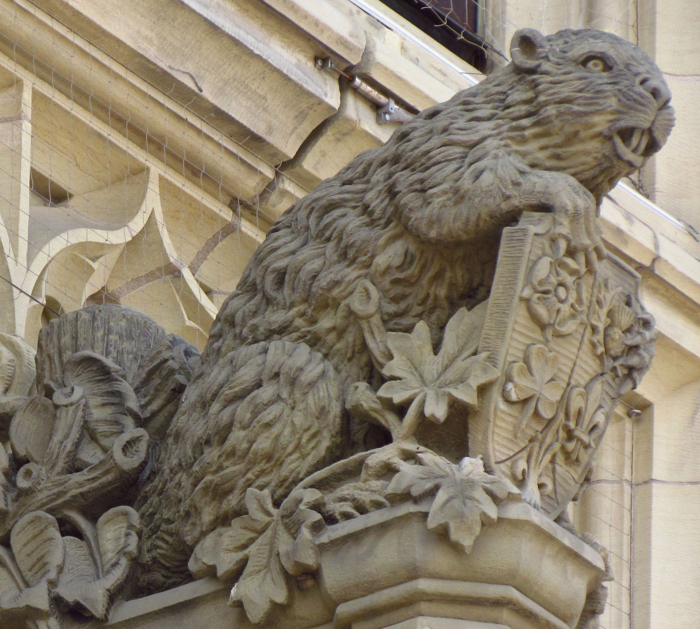

Canada's culture draws influences from its broad range of constituent nationalities, and policies that promote a "just society" are constitutionally protected. Canada has placed emphasis on equality and inclusiveness for all its people. Multiculturalism is often cited as one of Canada's significant accomplishments, and a key distinguishing element of Canadian identity. In Quebec, cultural identity is strong, and there is a French Canadian culture that is distinct from English Canadian culture. However, as a whole, Canada is, in theory, a cultural mosaic—a collection of regional ethnic subcultures. Canada's approach to governance emphasizing multiculturalism, which is based on selective immigration, social integration, and suppression of far-right politics, has wide public support. Government policies such as publicly funded health care, higher taxation to redistribute wealth, the outlawing of capital punishment, strong efforts to eliminate poverty, strict gun control—alongside legislation with a social liberal attitude toward women's rights (like pregnancy termination), LGBTQ rights, assisted euthanasia and cannabis use—are indicators of Canada's political and cultural values. Canadians also identify with the country's foreign aid policies, peacekeeping roles, the National park system and the Canadian Charter of Rights and Freedoms. Historically, Canada has been influenced by British, French, and Indigenous cultures and traditions. Through their language, art and music, Indigenous peoples continue to influence the Canadian identity. During the 20th century, Canadians with African, Caribbean and Asian nationalities have added to the Canadian identity and its culture. Canadian humour is an integral part of the Canadian identity and is reflected in its folklore, literature, music, art, and media. The primary characteristics of Canadian humour are irony, parody, and satire.
 Themes of nature, pioneers, trappers, and traders played an important part in the early development of Canadian symbolism. Modern symbols emphasize the country's geography, cold climate, lifestyles and the Canadianization of traditional European and Indigenous symbols. The use of the maple leaf as a Canadian symbol dates to the early 18th century. The maple leaf is depicted on Canada's current and previous flags, and on the Arms of Canada. Canada's official tartan, known as the "Maple leaf tartan", has four colours that reflect the colours of the maple leaf as it changes through the seasons—green in the spring, gold in the early autumn, red at the first frost, and brown after falling. The Arms of Canada are closely modelled after the royal coat of arms of the United Kingdom with French and distinctive Canadian elements replacing or added to those derived from the British version. Other prominent symbols include the national motto "A Mari Usque Ad Mare" ("From Sea to Sea"), the sports of ice hockey and lacrosse, the beaver, Canada goose, common loon, Canadian horse, the Royal Canadian Mounted Police, the Canadian Rockies, and more recently the totem pole and Inuksuk. Material items such as Canadian beer, maple syrup, tuques, canoes, nanaimo bars, butter tarts and the Quebec dish of poutine are defined as uniquely Canadian. Canadian coins feature many of these symbols: the loon on the $1 coin, the Arms of Canada on the 50¢ piece, the beaver on the nickel. The penny, removed from circulation in 2013, featured the maple leaf. The Queen's image appears on $20 bank notes, and on the obverse of all current Canadian coins.